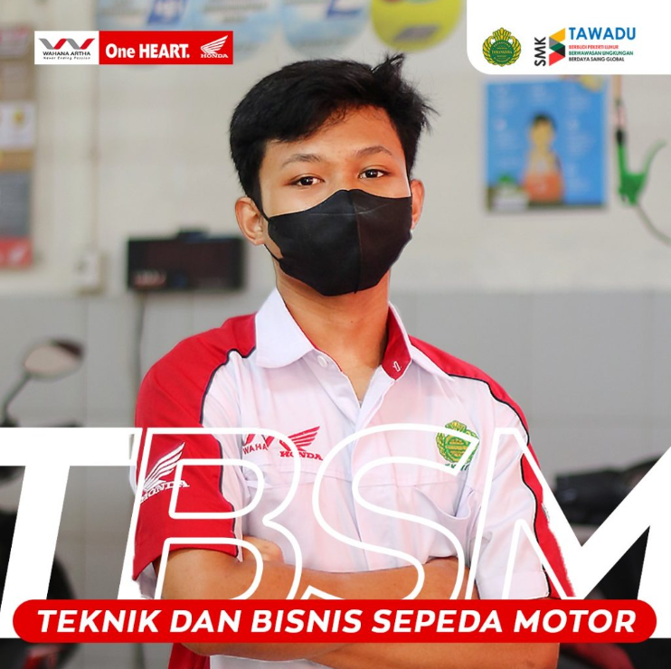

TBSM
Teknik dan Bisnis Sepeda Motor (TBSM) adalah Jurusan yang mempelajari ilmu-ilmu yang berkaitan tentang sepeda motor, jurusan yang banyak diminati oleh siswa terutama siswa laki-laki.
Smk Taman Siswa 2 Jakarta Menyediakan 6 Jurusan Yaitu Tbsm,Tkr,Rpl,Tkj,Titl,dan Tp
Visi Misi Smk TamanSiswa2 Adalah Sebagai Berikut
Berikut Adalah Foto" Dokumentasi Di Smk Taman Siswa 2 Jakarta Pusat
Teknik dan Bisnis Sepeda Motor (TBSM) adalah Jurusan yang mempelajari ilmu-ilmu yang berkaitan tentang sepeda motor, jurusan yang banyak diminati oleh siswa terutama siswa laki-laki.
Teknik Kendaraan Ringan merupakan kompetensi keahlian dibidang Teknik Otomotif yang menekankan keahlian pada bidang penguasaan jasa perbaikan kendaraan ringan. Kompetensi keahlian teknik kendaraan ringan menyiapkan peserta didik untuk bekerja pada pekerjaan jasa perawatan dan perbaikan didunia usaha / industri.
TKJ Adalah singkatan dari Teknik Komputer Jaringan. TKJ merupakan sebuah kejuruan yang mempelajari tentang cara merakit komputer, mengenal dan mempelajari komponen hardware apa saja yang ada di dalam komputer, merakit komputer serta fokus mempelajari jaringan dasar.
Rekayasa Perangkat Lunak (RPL) yang memiliki banyak peminat. Jurusan Rekayasa Perangkat Lunak tentunya, dapat memasuki semua bidang industri kerja, karena tidak hanya membahas seputar software computer. Jurusan RPL juga mempelajari pemrograman, mulai dari website, android, hingga dekstop.
Teknik Instalasi Tenaga Listrik berkomitmen untuk mewujudkan lulusan yang terampil dan profesional dalam bidang ketenagalistrikan, berakhlaq mulia, dan mampu bersaing dalam dunia kerja.
Teknik Pemesinan (TP) merupakan jurusan yang memperkenalkan dan mempelajari proses pengerjaan komponen mesin atau peralatan lainnya yang memerlukan perencanaan dan proses pengerjaannya dengan menggunakan alat-alat mesin perkakas indutri.

Smk Taman Siswa 2 Jakarta Memiliki Tim Futsal Yang Berprestasi Di Kota Jakarta

Smk Taman siswa 2 Jakarta Cukup Terkenal Dalam Bela Diri Merpati Putuhnya

Smk Taman Siswa 2 Jakarta Memiliki Eskul Bulu Tangkis Yang Cukup Baik Dan Berprestasi

Smk Taman Siswa 2 Jakarta Memiliki Eskul Voly Yang Cukup Baik Dan Berprestasi